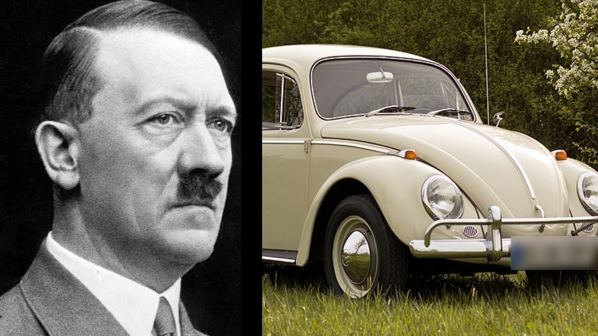

Fusca origem
A história do Fusca é uma das mais complexas e longas da história do automóvel. Diferente da maioria dos outros carros, o projeto do Fusca envolveu várias empresas e até mesmo o governo de seu país, e levaria à fundação de uma fábrica inteira de automóveis no processo. Alguns pontos são obscuros ou mal documentados, já que o projeto inicialmente não teria tal importância histórica, e certos detalhes perderam-se com a devastação causada pela Segunda Guerra Mundial.